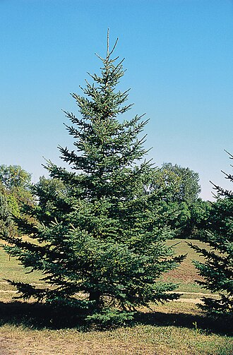
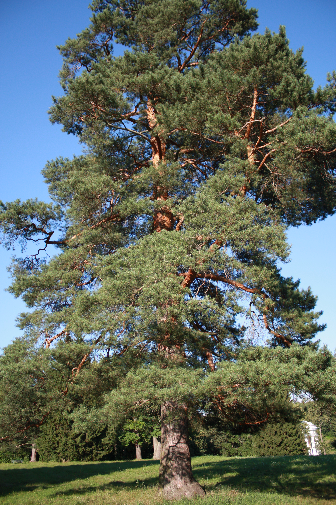

До них належать сосна, ялина, ялиця, модрина, кедр та інші дерева.
Більшість хвойних дерев залишаються зеленими протягом усього року, хоча є винятки, наприклад модрина, яка скидає хвою восени.
Хвойні дерева добре пристосовані до різних природних умов.
Багато з них можуть рости в холодному кліматі, витримувати сильний вітер і нестачу вологи.
Вони відрізняються за висотою, формою крони, довжиною та кольором хвої, тому серед них є як дуже високі лісові дерева, так і компактні декоративні види.

Хвойні дерева мають велике значення для природи та людини.